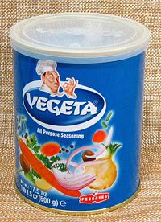

Vegeta

[Vegetable broth seasoning powder]
Vegeta is the most well known and widely distributed vegetable seasoning
powder. It is marketed as an "All Purpose Seasoning", useful as a rub for
all meats, poultry and fish, but also for soups, stews, stir fries,
casseroles and vegetable dishes. It is particularly useful to
non-vegetarians when they have to produce a vegetarian soup or stew,
don't have vegetable stock on hand, and are pressed for time.
The photo sample was imported from Croatia. Ingerd: Salt, dehydrated
vegetables (carrot, parsnip, onion, potato, celery, parsley leaves),
monosodium glutamate, sugar, cornstarch, black pepper, nutmeg, disodium
inosinate, riboflavin (color).
More on Salts and Seasonings.
Buying:
The photo example was purchased from a large
multi-ethnic market in Los Angeles, but it is widely distributed and
probably available even in some supermarkets..
Storing:
With the can tightly closed with its lid, and
placed away from heat, it will last more than a year.
Broth:
3/4 to 1 teaspoon per cup of boiling water. Adjust
to taste. For soups and stews, add it with 5 minutes to go in the
cooking time.
Seasoning Meats:
Sprinkle on and massage in before cooking or
grilling.
sa_vegeta 190216 - www.clovegarden.com
©Andrew Grygus - agryg@clovegarden.com - Photos
on this page not otherwise credited © cg1
- Linking to and non-commercial use of this page permitted